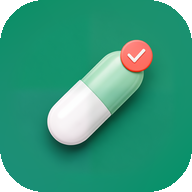

개인정보처리방침 · Privacy Policy
시행일 2026년 11월 3일 · Effective November 3, 2026
수집하는 정보가 없어요
챙김은 이름, 이메일, 기기 정보, 사용 기록 같은 개인정보를 전혀 수집하지 않아요. 회원가입도, 분석 도구도, 광고도 없어요.
복약 정보는 이 기기 안에만 저장돼요
입력한 약 이름, 복용 시간, 반복 요일, 기간과 복용 완료·건너뜀 기록은 휴대폰 안의 앱 저장 공간에만 저장돼요. 앱에는 인터넷 권한이 없어서 이 정보를 개발자나 다른 누구에게도 보낼 수 없어요. 클라우드 백업이나 기기 간 전송에도 넣지 않아요.
기록 내보내기
설정에서 「기록 내보내기」를 누르면, 사용자가 고른 위치에 복용 기록을 CSV 파일로 만들어요. 챙김은 이 파일을 개발자나 다른 누구에게도 보내지 않아요. 클라우드 저장소를 고르면 그 서비스가 파일을 보관해요. 파일을 어디에 두고 누구와 나눌지는 사용자가 정해요.
보관과 삭제
정보는 직접 지우기 전까지 기기에 남아요. 기록은 기록 탭에서 지울 수 있어요. 약을 삭제하면 알림은 멈추고 이미 남긴 기록은 남아요. 앱을 삭제하면 모든 정보가 함께 삭제돼요.
접근 권한
의료 고지
챙김은 의료기기가 아니며 질환을 진단·치료·예방하지 않아요. 복약에 관한 결정은 의사나 약사와 상담하세요.
어린이
챙김은 누구의 정보도 수집하지 않아요. 어린이도 마찬가지예요.
변경
이 방침이 바뀌면 새 시행일과 함께 이 페이지에 알려 드려요.
문의
We collect nothing
Chaenggim collects no personal information: no name, email, device information or usage data. There are no accounts, no analytics and no ads.
Your medication information stays on your device
The medication names, times, repeat days, periods and the taken/skipped records you enter are stored only in the app's storage on your phone. The app has no internet permission, so it cannot send this information to the developer or anyone else. It is also excluded from cloud backup and device-to-device transfer.
Exporting records
If you tap Export records in Settings, the app saves your dose history as a CSV file in the place you choose. Chaenggim does not send this file to the developer or anyone else. If you choose a cloud storage location, that service stores the file. You decide where to keep the file and who to share it with.
Storage and deletion
Your information stays on your device until you delete it. You can clear records in History. Deleting a medication stops its reminders and keeps the records you already logged. Uninstalling the app deletes all of it.
Permissions
Medical disclaimer
Chaenggim is not a medical device and does not diagnose, treat or prevent any condition. Talk to your doctor or pharmacist about your medication.
Children
Chaenggim collects no data from anyone, including children.
Changes
If this policy changes, the new text will appear on this page with a new date.
Contact